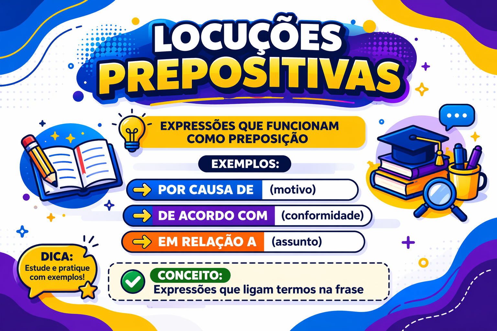

Locuções prepositivas: o que são, exemplos e como usar
As locuções prepositivas são expressões que funcionam como preposições e estabelecem relações entre termos. Construções como por causa de, em relação a e de acordo com ajudam a indicar causa, referência e conformidade.
Seu emprego exige atenção à expressão completa, ao sentido pretendido e ao termo que vem depois dela. Em “em relação à proposta”, por exemplo, a crase depende da combinação entre a preposição final da locução e o artigo que acompanha o substantivo.
Neste guia, você aprenderá a identificar as locuções prepositivas, distinguir estruturas semelhantes, interpretar seus sentidos e resolver exercícios com gabarito comentado.

O que é uma locução prepositiva?
Na gramática escolar, a locução prepositiva é um conjunto de duas ou mais palavras que desempenha papel equivalente ao de uma preposição.
Ela introduz um termo e o relaciona a outro elemento da construção. Não basta, portanto, reconhecer várias palavras juntas: é preciso observar seu funcionamento como unidade de ligação.
O evento foi adiado por causa da chuva.
- Locução prepositiva: por causa de.
- Termo introduzido: a chuva.
- Contração: de + a = da.
- Relação de sentido: causa do adiamento.
A locução é por causa de. A expressão completa no enunciado é por causa da chuva. Distinguir esses dois níveis ajuda na análise gramatical.
Qual é a estrutura das locuções prepositivas?
Uma estrutura frequente é preposição + substantivo + preposição, como em “por causa de” e “em relação a”. Também há expressões tradicionalmente descritas como locuções prepositivas que apresentam outras formações.
| Estrutura | Exemplo | Composição |
|---|---|---|
| Preposição + substantivo + preposição | Por causa de | Por + causa + de |
| Preposição + substantivo + preposição | Em relação a | Em + relação + a |
| Preposição + substantivo + preposição | De acordo com | De + acordo + com |
| Preposição e artigo + substantivo + preposição | À frente de | A + a + frente + de |
| Advérbio + preposição, na descrição tradicional | Perto de | Perto + de |
Na descrição escolar, a locução termina em uma preposição. Essa preposição não é necessariamente de: “em relação a” termina em a; “de acordo com”, em com.
Nem todo adjetivo seguido de preposição forma uma locução
Em “Ele é contrário à proposta”, contrário mantém seu funcionamento como adjetivo e rege a preposição a. O exemplo deve ser estudado como uma relação de regência nominal, sem classificar automaticamente “contrário a” como locução prepositiva.
A possibilidade de reconhecer palavras dentro de uma sequência não resolve, sozinha, se o conjunto constitui uma unidade prepositiva. Diferentes descrições gramaticais também podem delimitar algumas dessas expressões de maneiras distintas.
Principais locuções prepositivas e seus sentidos
| Locução | Sentido no exemplo | Exemplo |
|---|---|---|
| Por causa de | Causa | A atividade foi suspensa por causa da chuva. |
| Em virtude de | Causa | O atendimento mudou em virtude da reforma. |
| De acordo com | Conformidade | A equipe agiu de acordo com o regulamento. |
| Em relação a | Referência | Apresentamos sugestões em relação ao projeto. |
| A respeito de | Assunto | Conversamos a respeito da avaliação. |
| Acerca de | Assunto | O texto apresenta uma reflexão acerca da memória. |
| À frente de | Posição | A professora ficou à frente da turma. |
| Em frente a | Posição | O ônibus parou em frente à escola. |
| Ao lado de | Posição | A biblioteca fica ao lado do laboratório. |
| Em vez de | Substituição | Escolhemos o relatório em vez do resumo. |
| Apesar de | Concessão | A atividade ocorreu apesar da chuva. |
| A fim de | Finalidade | Revisamos o texto a fim de esclarecer os argumentos. |
| Além de | Adição | Além do relatório, enviamos as imagens. |
| Em benefício de | Beneficiário | A campanha arrecadou recursos em benefício da comunidade. |
Os sentidos apresentados correspondem aos exemplos. Algumas expressões permitem usos figurados: “à frente da equipe” pode indicar posição espacial ou liderança, conforme o contexto.
Preposição simples e locução prepositiva
A preposição simples é uma palavra, como de, em, com, para, por, sobre. A locução reúne mais de uma palavra para estabelecer uma relação.
Preposição simples
Conversamos sobre o projeto.
Locução prepositiva
Conversamos a respeito de o projeto.
Na escrita corrente: “a respeito do projeto”.
A substituição pode preservar uma relação geral, como assunto, sem produzir equivalência absoluta em todos os contextos. Também pode alterar o ritmo, o grau de explicitação e o registro.
Uma expressão mais longa não torna o texto automaticamente melhor. “Sobre o tema” pode ser tão adequado quanto “a respeito do tema”. A escolha deve servir à clareza e ao sentido.
Locução prepositiva e locução adverbial: qual é a diferença?
A locução prepositiva funciona como elemento de ligação. A expressão maior formada por ela e pelo termo introduzido pode exercer uma função adverbial na oração.
A reunião foi adiada por causa da chuva.
- Por causa de: locução prepositiva.
- A chuva: termo introduzido.
- Por causa da chuva: expressão com função de adjunto adverbial de causa.
Portanto, identificar a locução prepositiva e identificar a função adverbial do segmento completo são análises compatíveis, realizadas em níveis diferentes.
“Em frente” e “em frente de”
- O carro está em frente. — A expressão indica localização, sem complemento expresso.
- O carro está em frente da escola. — “Em frente de” introduz “a escola”.
A presença ou ausência de um termo introduzido pode modificar a estrutura analisada. Por isso, é necessário observar a expressão efetivamente empregada.
Locução prepositiva e locução conjuntiva
Na classificação escolar, locuções conjuntivas como já que, ainda que e a fim de que introduzem relações entre orações. Locuções prepositivas também podem introduzir construções com infinitivo, o que exige atenção.
Locução prepositiva
Revisamos o material a fim de reduzir as dúvidas.
“A fim de” introduz uma oração reduzida de infinitivo, com valor de finalidade.
Locução conjuntiva
Revisamos o material a fim de que os alunos compreendessem a explicação.
“A fim de que” introduz uma oração desenvolvida, com verbo no subjuntivo.
Assim, a regra “preposição liga palavras e conjunção liga orações” é uma simplificação insuficiente para esses casos. Uma preposição ou locução prepositiva pode introduzir uma estrutura oracional com infinitivo.
Como funciona a crase nas locuções prepositivas?
É necessário distinguir o acento que já integra a forma convencional de certas expressões da crase que pode ocorrer na ligação com o termo seguinte.
Expressões como “à frente de” e “à procura de”
Nas locuções à frente de, à procura de e à espera de, o acento grave integra a grafia convencional da expressão.
- A professora ficou à frente da turma.
- Estamos à procura de informações.
- Os estudantes ficaram à espera do resultado.
Não se deve, porém, acentuar toda expressão que contenha uma palavra feminina: escrevem-se por causa de, em relação a e a respeito de.
A preposição final “a” e o termo seguinte
Em em relação a, a preposição final pode combinar-se com o artigo feminino do termo introduzido:
- em relação a + a proposta → em relação à proposta;
- em relação a + as propostas → em relação às propostas;
- em relação a + o projeto → em relação ao projeto.
A presença de ao na construção masculina ajuda a compreender a combinação entre a preposição e o artigo.
Casos sem crase
- Em relação a uma proposta.
- Em relação a ela.
- Em relação a esse projeto.
- A equipe deu prioridade a revisar os dados.
Nos exemplos, não há fusão da preposição “a” com artigo feminino “a”. Antes de verbo no infinitivo, como “revisar”, não ocorre essa crase.
Não confunda as duas grafias
À frente de
O carro ficou à frente do ônibus.
Em frente a
O carro ficou em frente à escola.
No primeiro caso, o acento está no início da locução. No segundo, ocorre na combinação da preposição final com o artigo de “escola”.
“Em vez de” e “ao invés de”
Na distinção tradicional recomendada para a escrita formal, em vez de indica substituição, enquanto ao invés de destaca oposição ou inversão.
- Substituição: “Enviamos um relatório em vez de um resumo.”
- Oposição: “O indicador caiu ao invés de subir.”
Há usos mais amplos na língua corrente. Para manter a distinção semântica em textos formais, prefira em vez de quando houver simples escolha entre alternativas.
Não é necessário substituir toda ocorrência de “em vez de” por “ao invés de” para tornar a frase mais formal. A seleção deve acompanhar a relação pretendida.
“A fim de” e “afim”
A locução a fim de, escrita com palavras separadas, pode expressar finalidade:
A equipe revisou o texto a fim de eliminar ambiguidades.
Já afim é um adjetivo que pode significar semelhante, relacionado ou próximo. Seu plural é afins.
- Os pesquisadores estudam temas afins.
- As duas áreas apresentam interesses afins.
Quando o sentido for “com a finalidade de”, a grafia adequada é a fim de.
“Acerca de” e “cerca de”
Acerca de introduz assunto e pode aproximar-se de “sobre”. Já cerca de expressa aproximação, frequentemente diante de quantidade.
- Conversamos acerca do projeto. — Assunto.
- Participaram cerca de trinta pessoas. — Quantidade aproximada.
A semelhança gráfica não autoriza a troca entre as expressões. Em uma revisão, verifique se o texto apresenta assunto ou estimativa.
É possível omitir a preposição final?
Quando o complemento está expresso, é necessário preservar a ligação exigida pela construção:
- Adequado: “O evento foi adiado por causa da chuva.”
- Inadequado na norma-padrão: “O evento foi adiado por causa a chuva.”
- Adequado: “Agimos de acordo com o regulamento.”
- Inadequado na norma-padrão: “Agimos de acordo o regulamento.”
Entretanto, não se deve declarar que a sequência por causa é sempre errada. Em “por causa disso”, por exemplo, a preposição aparece contraída em disso — “de + isso”.
Além disso, enunciados podem apresentar elipses ou interrupções. A avaliação precisa considerar a construção completa, e não uma sequência isolada de palavras.
Locuções prepositivas e pontuação
A presença de uma locução prepositiva não determina, por si só, o emprego da vírgula. É necessário analisar a função, a posição e a extensão do segmento.
Expressão adverbial anteposta
Por causa da interdição da ponte, o transporte escolar seguiu outra rota.
A vírgula delimita a expressão causal anteposta. Com adjuntos curtos, podem existir possibilidades de pontuação relacionadas à organização e à ênfase do enunciado.
Expressão integrada ao predicado
O transporte escolar seguiu outra rota por causa da interdição.
Nessa organização, a expressão pode aparecer sem vírgula, integrada à informação do predicado.
Não separe a locução de seu complemento sem motivo
- Adequado: “Conversamos a respeito do projeto.”
- Inadequado: “Conversamos a respeito de, o projeto.”
Uma intercalação pode justificar sinais de pontuação em outra estrutura, mas não há motivo para separar arbitrariamente o elemento de ligação do termo que ele introduz.
Como usar locuções prepositivas na argumentação?
A locução ajuda a explicitar uma relação, mas não substitui a explicação do argumento. Escrever “por causa de” não demonstra, por si só, que existe uma relação causal.
Afirmação pouco desenvolvida
Por causa da exclusão digital, muitos estudantes enfrentam dificuldades.
Relação explicada
Por causa da falta de conexão estável, estudantes que dependem de atividades on-line podem não conseguir acessar materiais e enviar tarefas no prazo.
O segundo exemplo identifica uma condição e explica como ela pode produzir consequências. A precisão do argumento resulta da relação entre as informações, não apenas do conectivo.
Preserve o sentido ao substituir
- Por causa de: apresenta causa.
- Apesar de: apresenta uma circunstância que contraria uma expectativa.
- De acordo com: apresenta conformidade ou referência a uma fonte, conforme o contexto.
Compare “A atividade ocorreu por causa da chuva” e “A atividade ocorreu apesar da chuva”. A troca altera a relação: a chuva pode ser apresentada como motivo da atividade ou como obstáculo que não a impediu.
Como identificar uma locução prepositiva?
- Localize a expressão de ligação: observe construções como “por causa de” e “em relação a”.
- Delimite a locução: separe-a do termo introduzido.
- Reconheça contrações: “da”, “do”, “ao” e “à” podem reunir elementos de origens diferentes.
- Identifique a relação de sentido: causa, posição, referência, finalidade ou outra.
- Analise a expressão completa: ela pode exercer função adverbial ou participar de outra estrutura.
- Confira a escrita: observe a preposição final, a crase e possíveis confusões gráficas.
Exemplo de análise completa
A equipe agiu de acordo com as orientações da escola.
- Sujeito: a equipe.
- Verbo: agiu.
- Locução prepositiva: de acordo com.
- Termo introduzido: as orientações da escola.
- Relação de sentido: conformidade.
- Expressão completa: de acordo com as orientações da escola.
- Função do segmento completo: adjunto adverbial de conformidade.
Erros frequentes no uso das locuções prepositivas
- Afirmar que todas terminam em “de”: há construções com “a”, “com” e outras preposições.
- Confundir a locução com todo o segmento: “por causa de” é a locução; “por causa da chuva” inclui o complemento.
- Classificar qualquer adjetivo com preposição como locução: “contrário à proposta” envolve regência do adjetivo.
- Omitir a preposição necessária: emprega-se “de acordo com o texto”.
- Aplicar crase automaticamente: escreve-se “em relação à proposta”, mas “em relação a ela”.
- Confundir “a fim de” e “afim”: finalidade é expressa pela locução separada.
- Trocar causa por concessão: “por causa de” e “apesar de” não estabelecem a mesma relação.
- Usar expressões longas sem necessidade: concisão também contribui para a clareza.
Quiz sobre locuções prepositivas
Marque uma alternativa por questão. Observe a delimitação das expressões, as relações de sentido e a norma-padrão.
1. Em “A atividade foi suspensa por causa da chuva”, qual é a locução prepositiva?
2. Em “A equipe agiu de acordo com o regulamento”, a locução estabelece relação de:
3. Assinale a alternativa com emprego adequado do acento grave.
4. Compare “Estudou a fim de compreender o tema” e “Preparou exemplos a fim de que a turma compreendesse o tema”. Na classificação escolar, as expressões são, respectivamente:
5. Em “A reunião ocorreu apesar da chuva”, a expressão introduz:
6. Segundo a distinção tradicional entre substituição e oposição, qual frase exemplifica simples substituição?
7. Sobre “por causa de” e “por causa da chuva”, é correto afirmar que:
8. Qual alternativa apresenta corretamente a grafia da expressão de finalidade?
9. Em qual alternativa a expressão introduz assunto?
10. Qual afirmação descreve adequadamente a estrutura das locuções prepositivas?
Resumo sobre locuções prepositivas
- São expressões de duas ou mais palavras que funcionam como preposições.
- Estabelecem relações como causa, posição, referência, conformidade e finalidade.
- Na descrição escolar, terminam em preposição, que não precisa ser “de”.
- A locução deve ser distinguida do termo que ela introduz.
- Contrações como “da”, “do”, “ao” e “à” podem incorporar a preposição final.
- Uma expressão completa pode exercer função adverbial e conter uma locução prepositiva.
- “A fim de” e “a fim de que” recebem classificações diferentes na abordagem escolar.
- A crase depende da estrutura empregada e da combinação com o termo seguinte.
- “Em vez de” é adequado para simples substituição.
- A escolha da locução deve preservar o sentido e contribuir para a clareza.
Conclusão
Compreender as locuções prepositivas exige reconhecer a unidade de ligação, o termo introduzido e a relação construída entre as informações. Essa análise permite distinguir causa, concessão, finalidade e outras relações importantes para a interpretação.
Na produção escrita, observe a preposição final, as contrações e a possibilidade de crase. Escolha a expressão que corresponda ao sentido pretendido, evitando substituições feitas apenas para tornar a frase mais longa ou aparentemente mais formal.
Perguntas frequentes sobre locuções prepositivas
O que é uma locução prepositiva?
É uma expressão de duas ou mais palavras que funciona como uma preposição, estabelecendo uma relação entre termos, como “por causa de”, “em relação a” e “de acordo com”.
Toda locução prepositiva termina em “de”?
Não. Na descrição escolar, a locução termina em preposição, que pode ser “de”, “a”, “com” e outras, como em “em relação a” e “de acordo com”.
Qual é a diferença entre locução prepositiva e locução adverbial?
A locução prepositiva funciona como elemento de ligação. Uma expressão maior, formada por ela e seu complemento, pode exercer função adverbial, como “por causa da chuva”.
“Em relação a” sempre recebe crase?
Não. Há crase em “em relação à proposta”, com a fusão da preposição “a” e do artigo “a”. Não há crase em “em relação a uma proposta” ou “em relação a ela”.
Qual é a diferença entre “a fim de” e “a fim de que”?
Na classificação escolar, “a fim de” é locução prepositiva e pode introduzir uma oração com infinitivo. “A fim de que” é locução conjuntiva que introduz uma oração desenvolvida de finalidade.
Continue estudando Gramática
Referências e leituras de aprofundamento
- BECHARA, Evanildo. Moderna gramática portuguesa. Rio de Janeiro: Nova Fronteira.
- CUNHA, Celso; CINTRA, Lindley. Nova gramática do português contemporâneo. Rio de Janeiro: Lexikon.
- CEGALLA, Domingos Paschoal. Novíssima gramática da língua portuguesa. São Paulo: Companhia Editora Nacional.
- Ciberdúvidas — A crase em “Em relação à disciplina” .
- Senado Federal — Manual de Comunicação: ao invés de/em vez de .
Explore Outros Conteúdos
Continue seus estudos acessando outras seções do site Mestre Kira: